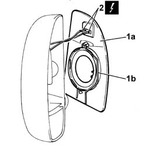
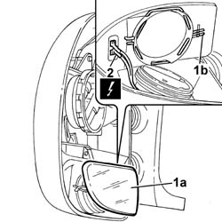
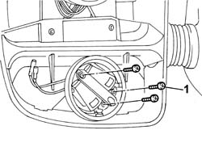
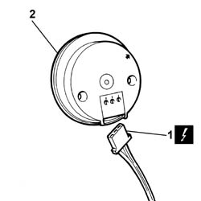
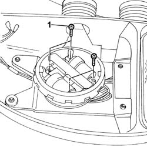
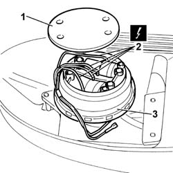

7005R31 ELECTRICALLY OPERATED DOOR MIRROR (ONE), LEFT OR RIGHT, REMOVED - DISMANTLING AND REASSEMBLY
- Path
- Procedures > 70 FITTINGS > 7005 PASSENGER COMPARTMENT FRONT SIDE DOORS > 7005R FRONT DOOR MIRRORS > 7005R31 ELECTRICALLY OPERATED DOOR MIRROR (ONE), LEFT OR RIGHT, REMOVED - DISMANTLING AND REASSEMBLY
- Kind
- repair procedure (removal / refitting; the operation number is the code)
- Applies to
- all engines; all production periods
- Interactive page
- https://sloeber94.github.io/elrnDB-fDct/en/#/244001456
Applies to: all engines; all production periods
 Removing
Removing
 Refitting
Refitting1. Release the upper reflector (1a) from the mirror acting on the retaining spring (1b).
2. Disconnect the electrical connectors.
- Remove the upper reflector.

Applies to: all engines; all production periods
1. Release the lower reflector (1a) from the support acting on the retaining spring (1b).
2. Disconnect the electrical connectors.
- Remove the lower reflector.

Applies to: all engines; all production periods
1. Undo the bolts (1a) fixing the lower reflector motor (1b).

Applies to: all engines; all production periods
1. Disconnect the electrical connector for the motor.
2. Remove the motor.

Applies to: all engines; all production periods
1. Undo the bolts (1a) fixing the upper reflector motor (1b).

Applies to: all engines; all production periods
1. Release the cover for the compartment housing the motor electrical connectors.
2. Mark the electrical connectors and disconnect them.
3. Remove the motor.

Applies to: all engines; all production periods
Refitting
Removing- Connect the electrical connections to the upper reflector motor.
- Close the compartment housing upper reflector motor connectors using the special cover.
- Fasten the upper reflector motor to the mirror cover tightening the fixing bolts.
- Connect the electrical connector for the lower reflector motor.
- Fasten the lower reflector motor to the mirror cover tightening the fixing bolts.
- Connect the electrical connectors for the lower reflector.
- Fasten the lower reflector to the motor using the retaining spring.
- Connect the electrical connectors for the upper reflector.
- Fasten the upper reflector to the motor using the retaining spring.